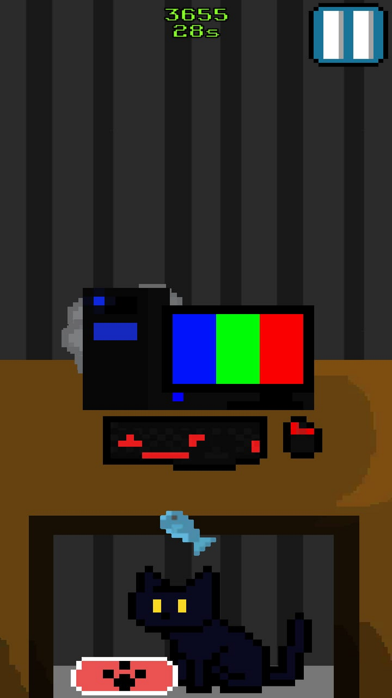

Meu nome é Fabio. Nasci em 2006, em Fortaleza. Minha jornada com a
programação começou aos 14 anos com criação de jogos. Hoje em dia estou
focado em backend e participo em projetos na área que envolvem o funcionamento da aplicaçao.
Linguagens que eu conheço:
Java;
javascript;
HTML;
CSS;
PHP;
C#;
HOMEWARE

Um jogo arcade que envolve arrastar o dedo na tela na direção
da seta, enquanto é nescessário alimentar um gato.
Foi criado com o objetivo de mostrar a vida de alguém que trabalha no
home office tendo que, enquanto trabalha, cuidar dos afazeres caseiros.
Amazon AppStore
OpenGL Java
Um motor gráfico programado em java usando a biblioteca gráfica opengl.
Ela possui suporte à modelos em .obj, a iluminação e textura.
Foi desenvolvida usando uma biblioteca lwjgl
Em desenvolvimento.